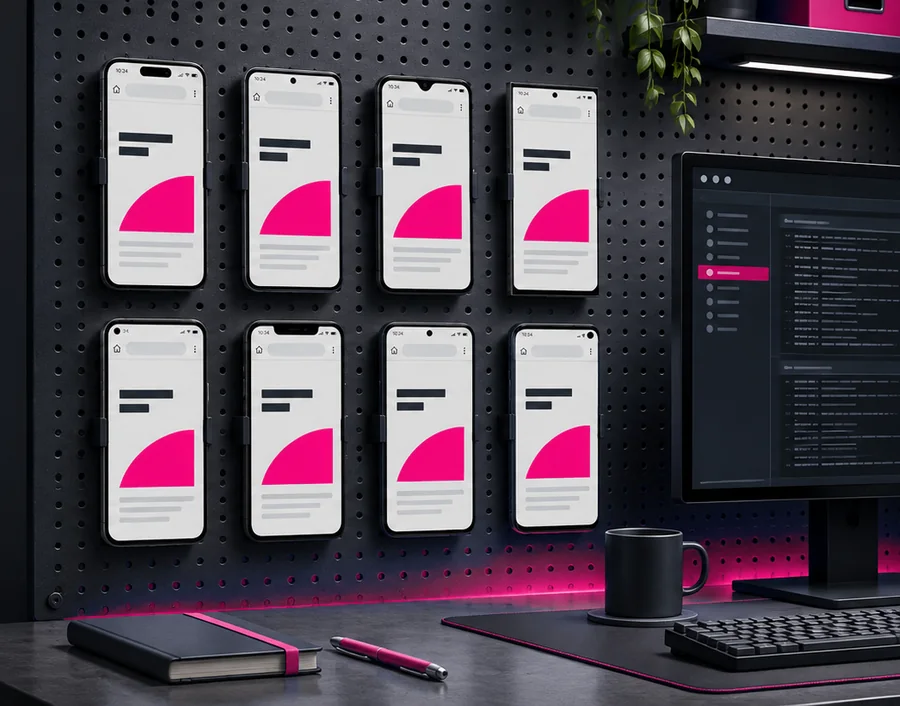
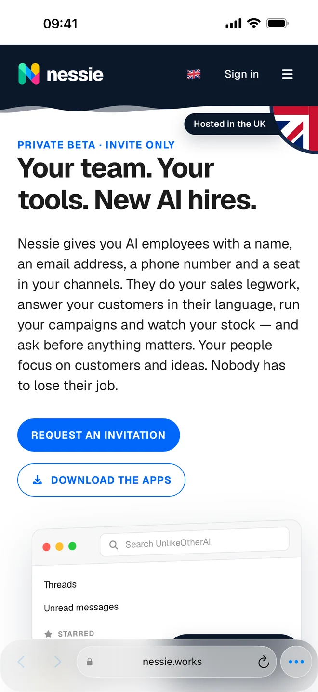
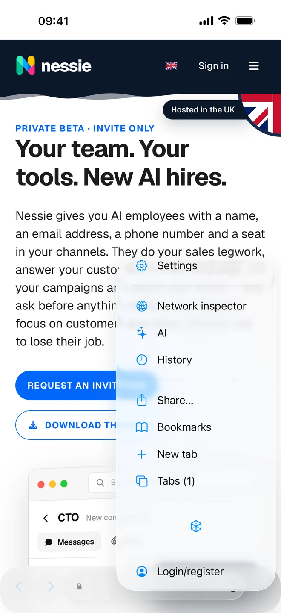
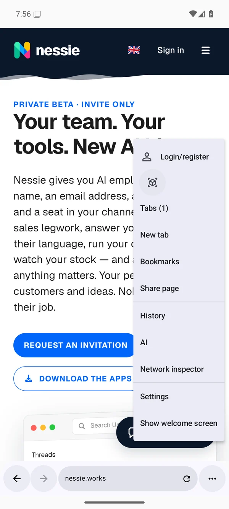
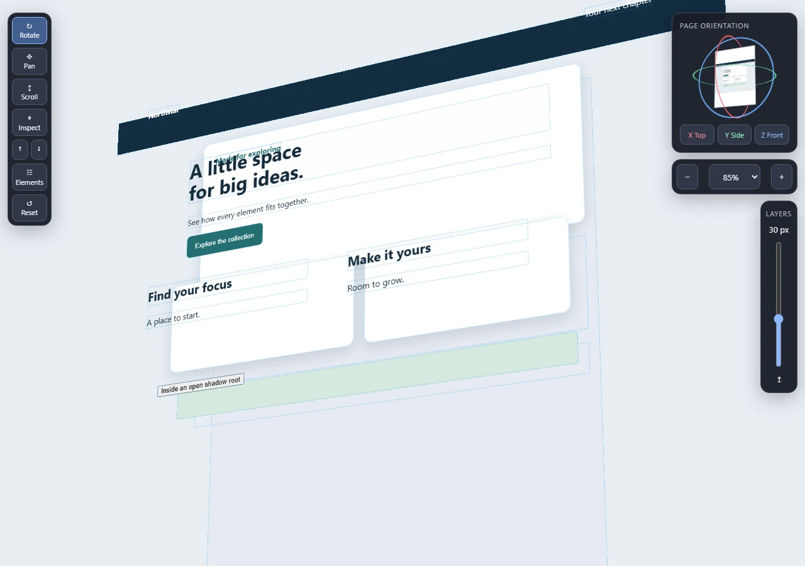

Read a page the way a model does
Reader-mode text, the accessibility tree, visible elements and form state instead of raw HTML.
kelpie_get_page_text
kelpie_get_accessibility_tree
kelpie_get_form_state
Kelpie is an open-source browser for iPhone, iPad, Android, Mac, Windows and Linux. Browse with it yourself, or connect an agent through MCP, HTTP or the command line and let it navigate, read, click and take screenshots on real devices.
npm install -g @unlikeotherai/kelpie
Runs on iOS 16 and Android 9 or later, so the old phones in your drawer count.

Pair the phones and tablets you have, including the old ones in the drawer. Send one command and every screen navigates, fills the same form and returns its own screenshot, so you see what each device really renders.
A trusted agent opens a tab, reads the page and follows links in a mobile browser, where sites serve their mobile layout.

On supported devices Kelpie reads the page with a model running on the device and returns a short answer. Your agent gets a few lines back instead of the whole page.
kelpie_ai_ask with a prompt and the page as context.

The 3D inspector pulls a page apart by DOM depth. Rotate it, pick single elements and find the invisible overlay that is swallowing your taps.

Kelpie's MCP server starts with one browser interface and three discovery tools, so your agent's context is not filled with schemas it never uses. The rest load when the agent asks for them.
kelpie_browser_controlTabs, navigation, snapshots, screenshots, clicks and typing through one versioned interface.kelpie_extensionsLists the name of every extension.kelpie_extension_toolsReturns the schemas for up to 20 extensions at a time.kelpie_extensionCalls an extension with its documented arguments.Every reply is { version: 1, ok, value }. A change that may already have happened is never retried automatically.
Reader-mode text, the accessibility tree, visible elements and form state instead of raw HTML.
kelpie_get_page_text
kelpie_get_accessibility_tree
kelpie_get_form_state
An annotated screenshot numbers every control. The agent clicks or fills by number, with no selectors.
kelpie_screenshot_annotated
kelpie_click_annotation
kelpie_fill_annotation
Network requests with status and timing, console output and JavaScript errors with stack traces.
kelpie_get_network_log
kelpie_get_console_messages
kelpie_get_js_errors
Run a timed script of taps, typing, captions and highlights on a phone to show someone exactly where to click.
kelpie_play_script
kelpie_show_commentary
kelpie_highlight
Devices on one account share website cookies directly over your network. Isolated tabs keep theirs apart.
kelpie_get_cookie_sync_status
kelpie_copy_cookies
kelpie_get_partitions
Switch orientation, apply a viewport preset or set an exact size, then check the layout again.
kelpie_set_orientation
kelpie_set_viewport_preset
kelpie_resize_viewport
What a device supports depends on its platform. An agent calls capabilities to find out. See the API reference.
Open Kelpie on a device and install the CLI on your computer. They find each other on your network.
# Install the CLI. It needs Node.js 20 or later. $ npm install -g @unlikeotherai/kelpie # Find the browsers on your network. $ kelpie discover # Approve this computer once, on the device. $ kelpie --device "DEVICE_ID" pair $ kelpie --device "DEVICE_ID" navigate https://example.com $ kelpie --device "DEVICE_ID" screenshot
.mcpAdd { "command": "kelpie", "args": ["mcp"] } to Claude, Cursor or any other MCP client.
.httpEvery method is a POST /v1/{method} on the device, port 8420 by default.
.cliNavigate, click, fill and capture from a shell. kelpie --llm-help prints structured help for a model.
.lanEach browser advertises _kelpie._tcp over mDNS. kelpie discover lists them.
Programs on the same machine connect without a prompt. Another computer needs one approval on the device. The approval belongs to that computer's signing key, so a new IP address changes nothing, and you can revoke it in Settings.
No account and no cloud relay. Devices find each other over mDNS and talk directly on your network. Sign in only if you want synced favourites and cookie sync.
Apache-2.0 on GitHub. Read the code, open an issue, or embed the browser core in your own app.
UnlikeOtherAI/kelpieFree and open source. Each platform is versioned on its own.
Node.js 20 or later, on any desktop.
npm i -g @unlikeotherai/kelpie